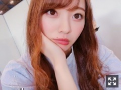
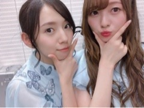
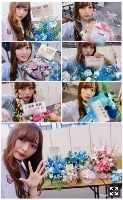
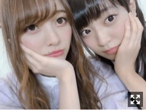
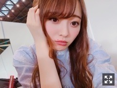

気持ちが大事
みなさまこんにちは！！
乃木坂46 ３期生の
梅澤美波です！

昨日のわたし！
最近服を買っておらず
暖かくなってきたから
新しい服を調達したくて仕方ない毎日です( .. )
服を買ってクローゼットにしまう瞬間が
たまらなくすき！
でも最近の悩みは
服の収納が圧倒的に足りないこと！
増やさなあかんな〜
ミュージックステーションさんに
出演させて頂きました！
観てくださった皆様
ありがとうございました！
乃木坂に加入して
叶えたい夢のひとつでした。
こんなに早く叶えられるとは
正直思っていませんでした。
だから、心から嬉しかったです。☺︎
この機会を下さったことに
とても感謝しています！
そして今回生駒さんが卒業されてから
初めてのパフォーマンスでした
生駒さんのポジションに星野さんが入り
星野さんのポジションで私が参加させて頂きました！
アンダーと３期生が合流したこのシングルでの目標で
代打でポジションに入ることは
ひとつの目標でした。
いつ呼ばれても対応できるように
力をつけておくことが
今出来る役目なのではないかなと思ったから☺︎
とても緊張したけど
色んな先輩方が助けてくださって
声をかけてくださって
喜んでくれる同期もいたり
素敵な方に囲まれて活動出来ていることを改めて実感する１日でもありました！
一人一人からいただいた言葉を
全部書きたいくらい嬉しかったけど
私の心に閉まっておきます。☺︎
まだまだ力不足な部分もありますが
本番でのパフォーマンスは
本当に楽しかった！
背が高く体も大きい分
上手くパフォーマンス出来れば
シンクロニシティの振り付けが
映えるのではないかと思ったので
自分なりに試行錯誤して振りを固め
大きく動かせるようパフォーマンスしました！
いつか代打ではなく出演できるよう、
もっともっと頑張ります。

(私の顔が何故かすごく赤いですが（笑）
大好きな新内さん
おめでとうって言ってくれて、リハの前も本番の前も背中叩いてくれて、いっぱい声をかけてくれて、本番前はギューってしにいきました
前にご飯に言った時に話した
私の目標をいつか叶えられるように
頑張ろうと思いました、
本当に大好きなお姉ちゃん☺︎
そして昨日、２０枚目シングルラストの
全国握手会がありました！
お越しくださった皆様
ありがとうございました！
シンクロニシティで星野さんのポジションに参加させて頂きました！
本番前はドキドキだったけど
とても楽しかったなあ〜
もっと余裕をもって踊れるように
また呼んでもらえるように頑張ります！
新しい世界、トキトキメキメキも
フルサイズでの披露は
中々なくなると思うので
精一杯パフォーマンスしてきました！
青と水色のサイリウムも見つけました
たくさんの応援ありがとうございます！
そして握手会は川後さんとのペア！
川後さん推しの皆様
とても優しくて、、、私にお付き合いして下さりありがとうございました(；；)
楽しかったです∠( ˙-˙ )／
そして梅澤推しの方も
いつも本当にありがとう！
Mステの感想がやっぱり多くて
本当に嬉しかった〜
みんなびっくりしたって言ってて
Mステ見て急遽来たよって方もたくさんいて
愛されてるなあと幸せでした
ファンの方がいれば本当になんでも頑張れます、何よりも私の支えです！
皆様のおかげです！
いつも本当にありがとうございます。
皆様の喜ぶ顔がもっと見たいから
私も頑張るね☺︎

お花たち！
本当に素敵なものばかり！
お花についてる名前とコメントも
ちゃんと読んでるからね（´-`）.｡oO
たくさんの愛をありがとう！
本当に嬉しいです！
そして握手会で
そして全国ツアーの開催が発表されました！
◎日程、会場
▽〈東京〉明治神宮球場、秩父宮ラグビー場
７／６、７、８
★真夏の全国ツアー
▽〈福岡〉福岡ヤフオク!ドーム
７／２１、２２
▽〈大阪〉ヤンマンスタジアム長居
８／４、５
▽〈愛知〉ナゴヤドーム
８／２６、２７
▽〈宮城〉ひとめぼれスタジアム宮城
９／１、２
私は全国ツアーの大阪会場は
舞台本番のため参加しません。
ツアーに戻った時に
グループの力になれるよう、
私は私のやるべき事を頑張ります！
私にとっても、今までもこれからも、
とても充実している夏になると思います
でも、なにも疎かにしたくない
全部を１００％以上の力で活動できるように頑張りたいと思います！
今年も皆様と乃木坂46で
最高に熱い夏にしましょう！
ぜひ遊びに来てください！

たまさん
いつも以上に甘えてきました
この前まで
すっごい寂しかったの
それで一昨日さ
楽屋に入ったられんかとはづが
「みなみぃ〜！！」
とか言って駆け寄ってきて
最高に可愛くて愛おしくて
あやは握手会の日
ずっと抱きついてくるし
たまみとでんは相変わらずというか
いつも以上に引っ付いてくるし
れのはいつもあんまり甘えてこないけど
元気にわいわいお話出来て
なんか本当にみんな可愛くて
やっぱ落ち着くなあと思いました( .. )
しばらく会えないと思うと
本当に寂しくて泣きそう。（笑）
けどみんなが頑張ってるの見てて
ちょっと心配だったりしたけど
そんな心配いらなくて
今はみんなが輝く本番の日が本当に楽しみ！
私もセラミュー頑張らなきゃって
みんなのおかげで改めて思えました☺︎
毎日勉強することばかりで
反省したりする事の方が多いけど
楽しんでできたらいいなと思います！
頑張るぞー！
よし！
また更新します！
星の王女さまのこと
ちゃんと書いてないから
めちゃくちゃ今更感あるけど

こんなの撮ったっけ。（笑）
おやすみ！
最近は異常に寂しい気持ちになります。（笑）
こんなの本当に珍しいんだ〜（笑）
でもこういう時こそ常に前を、上を向いて頑張りたいと思います！
Original：https://www.nogizaka46.com/s/n46/diary/detail/44887?ima=4954&cd=MEMBER